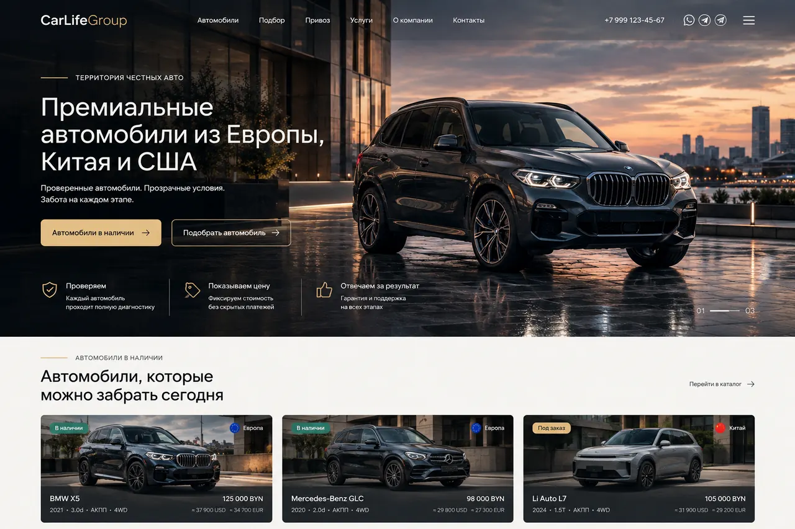

Полный пакет документов и проверка юридической истории до сделки.

01 / 04Полные характеристики
Марка / модельBMW X5 G05
КомплектацияxDrive30d M Sport
Год2022
Пробег68 400 км
ДвигательДизель, 3.0 л
Мощность286 л.с.
Трансмиссия8-ст. автомат
ПриводПолный, xDrive
ПроисхождениеЕвропа
СтатусВ наличии
Почему мы готовы его продать
Компьютерная диагностика более чем по 50 пунктам с проверкой ключевых систем автомобиля.
Основная цена указана в BYN; ориентиры USD/EUR показаны справочно.
Условия покупки
Все автомобили полностью растаможены для Республики Беларусь, а утилизационный сбор уплачен в соответствии с нормами ЕАЭС. По автомобилю можно запросить просмотр, консультацию и дополнительные детали до сделки.